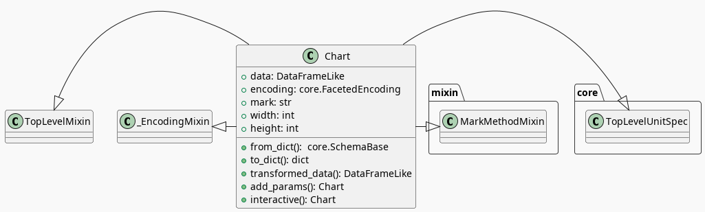
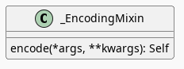
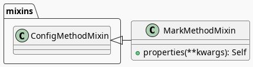

Introduction To Altair
Table of Contents
Posts
Setup
# python
from functools import partial
from pathlib import Path
import os
# pypi
from dotenv import load_dotenv
from expects import be_true, expect
from tabulate import tabulate
import altair
import pandas
# monkey
from graeae.visualization.altair_helpers import output_path, save_chart
SLUG = "introduction-to-altair"
OUTPUT_PATH = output_path(SLUG)
HEIGHT, WIDTH = 600, 800
SAVE_IT = partial(save_chart, output_path=OUTPUT_PATH, height=HEIGHT + 100)
TABLE = partial(partial(tabulate,
headers="keys",
tablefmt="orgtbl",
showindex=False))
The Data
load_dotenv(override=True)
table_path = Path(os.getenv("WORLD_HAPPINESS_TABLE"))
expect(table_path.is_file()).to(be_true)
table = pandas.read_csv(table_path)
print(table.shape)
(2199, 11)
def column_printer(table, headers=("Column", "Type")):
print(TABLE(
((column, str(table[column].dtype))
for column in table.columns),
headers=headers))
return
column_printer(table)
| Column | Type |
|---|---|
| Country name | object |
| year | int64 |
| Life Ladder | float64 |
| Log GDP per capita | float64 |
| Social support | float64 |
| Healthy life expectancy at birth | float64 |
| Freedom to make life choices | float64 |
| Generosity | float64 |
| Perceptions of corruption | float64 |
| Positive affect | float64 |
| Negative affect | float64 |
class Column:
__slots__ = ()
country = "Country name"
year = "year"
happiness = "Life Ladder"
gdp = "Log GDP per capita"
generosity = "Generosity"
Creating a Chart
chart = altair.Chart(table)
print(type(chart))
<class 'altair.vegalite.v5.api.Chart'>
The Chart class is defined in altair.vegalite.v5.api. This is its docstring description:
Create a basic Altair/Vega-Lite chart.
Although it is possible to set all Chart properties as constructor attributes, it is more idiomatic to use methods such as
mark_point(),encode(),transform_filter(),properties(), etc. See Altair's documentation for details and examples: http://altair-viz.github.io/.
The attributes set by the Chart class' constructor (as opposed to being passed to its parent classes) are:
- data
- encoding
- mark
- width
- height
By default they're set to Undefined which is an altair-defined object (see altair.utils.schemapi), and as noted, you don't normally set the attributes using the constructor (other than data which isn't mentioned in the docstring but appears to be passed to the Chart constructor by convention).

The methods take arguments, but I believe interactive (which I haven't seen called with arguments) is the only method that I'll be using - all the other methods you use belong to parent classes.
TopLevelUnitSpec

Only the top-most parent (SchemaBase) has a method of interest here.
SchemaBase

There are many more methods in altair.utils.schemapi.SchemaBase but I'm highlighting copy here because it gets used quite a bit by the other classes but is defined in this somewhat obscure place. The behavior is what you'd expect so I don't see a need to go over it, but it's one of those mystery methods that just pops up when you use deep inheritance like this that makes you wonder what's going on so I'll document it here, for now.
note: The details of the code probably shouldn't go into the introduction-introduction. Maybe put this stuff further down or in another post.
_EncodingMixin

The encoding method takes in whatever combination of positional and keyword arguments you pass into it and uses them along with the values that are already set in the Chart's encoding attribute to update the encoding before returning the chart (a copy so the original chart isn't changed).
The encoding attribute is an instance of the altair.vegalite.v5.schema.FacetedEncoding class.
Making It a Bar Chart
bar_chart = chart.mark_bar()
print(type(bar_chart))
<class 'altair.vegalite.v5.api.Chart'>

Looking in the mark_bar method, there's a lot of arguments you could pass to it, but fundamentally all it's really doing is setting the mark attribute to bar.
print("Chart Mark: '{}'".format(chart.mark))
print("Bar Chart Mark: '{}'".format(bar_chart.mark))
Chart Mark: 'Undefined' Bart Chart Mark: 'bar'
Year
year_counts = table.year.value_counts().reset_index().sort_values("year").T
year_counts.columns = year_counts.iloc[0]
year_counts = year_counts.drop(year_counts.index[0])
print(TABLE(year_counts, showindex=True))
| 2005 | 2006 | 2007 | 2008 | 2009 | 2010 | 2011 | 2012 | 2013 | 2014 | 2015 | 2016 | 2017 | 2018 | 2019 | 2020 | 2021 | 2022 | |
|---|---|---|---|---|---|---|---|---|---|---|---|---|---|---|---|---|---|---|
| count | 27 | 89 | 102 | 110 | 114 | 124 | 146 | 141 | 136 | 144 | 142 | 141 | 147 | 141 | 143 | 116 | 122 | 114 |
Now as a bar-chart.
year_chart = bar_chart.encode(
x="year:N",
y="count()")
year_chart = year_chart.properties(height=HEIGHT, width=WIDTH)
SAVE_IT(year_chart, "year-counts-bar-chart")

This method makes a copy of the class, validates the arguments and then sets the properties on itself. The arguments are based on the JSON Schema passed to vega-lite.
Life Ladder
By Year
boxplot = chart.mark_boxplot(extent="min-max").encode(
x="{}:O".format(Column.year),
y=Column.happiness
).properties(height=HEIGHT, width=WIDTH)
SAVE_IT(boxplot, "happiness-year-boxplots")
The Most Recent Year (2022)
print(table.year.dtype)
int64
data_2022 = table[table.year==2022]
chart_2022 = altair.Chart(data_2022).properties(
height=HEIGHT, width=WIDTH)
bar_chart_2022 = chart_2022.mark_bar()
ladder_chart = bar_chart_2022.encode(
x=altair.X(Column.happiness, bin=True),
y="count()"
)
SAVE_IT(ladder_chart, "ladder-histogram")
GDP
scatter = chart_2022.mark_circle()
print(scatter.mark)
circle
gdp_scatter = scatter.encode(
x=Column.gdp,
y=Column.happiness
)
SAVE_IT(gdp_scatter, "gdp-vs-happiness")
With Generosity
gdp_generosity = scatter.encode(
x=Column.happiness,
y=Column.generosity,
color=Column.gdp,
tooltip=[Column.country, Column.happiness, Column.gdp,
Column.generosity]
)
SAVE_IT(gdp_generosity, "gdp-and-generosity")
Links
Tutorial Sources
- Fundamentals of Visualization with Dr. Danielle Albers Szafir: Coursera course where the original tutorial came from.
- InfoVis Course from Marian Dork: Iniversity of Applied Sciences Potsdam that the Coursera course cites as the source for their tutorial.
The Data
- World Happiness Report Dataset [Internet]. [cited 2023 Dec 11]. Available from: https://www.kaggle.com/datasets/unsdsn/world-happiness
- Inc G. Gallup.com. 2009 [cited 2023 Dec 11]. Understanding How Gallup Uses the Cantril Scale. Available from: https://news.gallup.com/poll/122453/Understanding-Gallup-Uses-Cantril-Scale.aspx
- World Happiness Report [Internet]. 2023 [cited 2023 Dec 11]. Available from: https://worldhappiness.report/
Altair
- Layered and Multi-View Charts — Vega-Altair 5.2.0 documentation [Internet]. [cited 2023 Dec 12]. Available from: https://altair-viz.github.io/user_guide/compound_charts.html